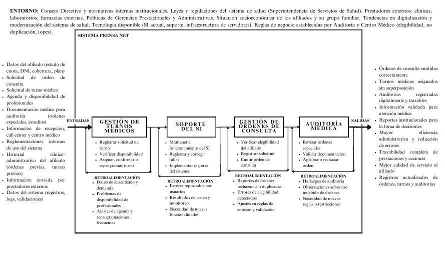

Bienvenido a nuestro Trabajo Final Integrador del sistema de información para la Obra Social de Prensa.
Este sitio tipo blog reúne la documentación, análisis, modelos y prototipos que dan forma a la
plataforma Prensa Net.
Objetivo del Blog
Presentar, de manera ordenada por etapas, todo el recorrido del proyecto: desde el modelado del
negocio hasta el análisis de viabilidad y los prototipos de la solución.
Documentación del Sistema
El sistema de información propuesto busca integrar la gestión de órdenes de consulta, turnos médicos
y auditoría en una única plataforma coherente, accesible tanto para afiliados como para el personal
administrativo y de auditoría médica.
A lo largo de este sitio podrás navegar cada etapa del trabajo, revisar resúmenes de los documentos,
visualizar diagramas clave y, finalmente, experimentar con los
prototipos no operacionales desarrollados para la interfaz de usuario.
Modelado del negocio
Documento Visión
Especificación Complementaria
Proceso Unificado
Informe de Viabilidad
Prototipos UI Prensa Net
Primera Etapa
Documento de la Empresa
Modelado del negocio de la Obra Social de Prensa: historia, misión, visión, estructura organizacional y
procesos clave de Orden de Consulta y Turnos.
Historia, Misión y Visión
Contexto institucional de la Obra Social de Prensa de Tucumán.
La Obra Social de Prensa surge en 1973 como iniciativa de la Asociación de Prensa de Tucumán, con el
objetivo de garantizar la atención de la salud de los trabajadores de prensa y sus familias. Con el
tiempo amplió su cobertura a otros sectores laborales, sosteniéndose bajo principios de
solidaridad, universalidad, equidad y accesibilidad.
Su misión es asegurar cobertura de salud integral para todos los afiliados, mientras que la visión se
orienta a consolidar un modelo sanitario inclusivo y preventivo, gestionado por y para los
trabajadores de prensa.
Objetivos institucionales
Garantizar el acceso integral a la salud, priorizando equidad y calidad.
Fortalecer un modelo inclusivo basado en la prevención.
Lograr una gestión eficiente y sostenible de los recursos prestacionales.
Fomentar la innovación y mejora continua de procesos y sistemas.
Promover una cultura organizacional centrada en el servicio humano.
Valores institucionales
Los valores institucionales orientan el funcionamiento diario de la Obra Social y se reflejan en los
procesos que luego informatiza Prensa Net:
Solidaridad: el aporte de todos sostiene el acceso a la salud de cada afiliado.
Justicia social y equidad: prioridad a quienes más lo necesitan, sin discriminación.
Transparencia: trazabilidad de órdenes, turnos y auditorías para evitar abusos y fraudes.
Participación democrática: presencia activa de los trabajadores de prensa en los órganos de decisión.
Responsabilidad social: compromiso con la comunidad y el entorno sanitario provincial.
Calidad de servicio: búsqueda permanente de mejores tiempos de respuesta y atención personalizada.
Funciones generales y procesos principales
La estructura se organiza bajo una modalidad lineal-funcional, combinando niveles jerárquicos
clásicos (Consejo Directivo, Gerencias, Departamentos) con áreas técnicas transversales como Sistemas y
Auditoría Médica. Dentro de este esquema se destacan dos procesos de negocio centrales:
Orden de Consulta: Emisión, validación de afiliado y profesional, control de
elegibilidad y registro de la orden.
Turno Centro Médico: Solicitud de turno, verificación de disponibilidad, confirmación,
reprogramación y registro de asistencia.
Segunda Etapa
Documento Visión + Especificación Complementaria
Definición del propósito del sistema, stakeholders, usuarios, reglas de negocio y requisitos no funcionales
que condicionan la solución Prensa Net.
Documento Visión
Propósito, alcance, problema y actores del sistema de información.
Propósito y alcance
El sistema está orientado a optimizar la gestión médica y prestacional de la Obra Social de
Prensa. Incluye:
Emisión y control de órdenes de consulta.
Gestión de turnos médicos en el centro asistencial propio.
Registro digital de auditorías médicas.
Integración entre el área de Sistemas y el Centro Médico.
Problema / oportunidad
El punto de partida es la existencia de procesos manuales y poco integrados en la gestión de
órdenes y turnos, lo que genera demoras, errores y escasa trazabilidad. La solución planteada es un
sistema digital que centralice la información y automatice reglas de negocio.
Visión general del producto
Prensa Net se concibe como un producto integral de gestión prestacional que unifica en una misma
plataforma los circuitos de afiliados, centro médico y auditoría. Desde la perspectiva del Documento Visión,
el producto se organiza en módulos claramente identificables:
Módulo de Afiliados: consulta de datos personales, estado de cuenta, historial de órdenes y
turnos, y autoservicio para solicitar nuevas prestaciones.
Módulo de Órdenes de Consulta: motor de reglas que verifica elegibilidad, evita duplicidades
y registra cada emisión con trazabilidad completa.
Módulo de Turnos Centro Médico: agenda unificada de profesionales, disponibilidad en tiempo real
y confirmaciones con notificaciones al afiliado.
Módulo de Auditoría Médica: administración de órdenes con requisitos especiales, dictámenes y
seguimiento de alto costo o prácticas complejas.
Módulos de soporte (Facturación, Farmacia, Tesorería): consumo de la misma base de datos
para cerrar el circuito administrativo y contable.
Desde esta visión, el sistema se implementa como una solución web multi-rol, con pantallas simplificadas para
afiliados y vistas más completas para operadores y auditores, asegurando consistencia entre lo modelado en
el negocio y lo que ve el usuario final.
Stakeholders y usuarios
Se identifican tanto no usuarios (Consejo Directivo, Gerencias, Analistas de Sistemas,
organismos reguladores y prestadores externos) como usuarios directos:
Afiliados (autoservicio de órdenes y turnos).
Recepción / Admisión y Call Center.
Personal del Centro Médico (médicos, coordinación, recepción).
Área de Auditoría Médica.
Facturación, Tesorería y Farmacia propia.
Equipo de Desarrollo y Soporte de Sistemas.
El sistema propone un repositorio maestro de afiliados, órdenes y turnos, un motor de reglas
configurable y portales diferenciados por rol, con control de acceso basado en roles (RBAC).

Diagrama de Bloques
Tercera Etapa
Proceso Unificado
Construcción del modelo del sistema bajo Proceso Unificado: casos de uso, modelo del dominio, diagramas
de secuencia, contratos, diagrama de estados y modelo de análisis.
Fase de Inicio & Elaboración
Casos de uso, contratos y modelo del dominio.
Introducción al Proceso Unificado
El documento de Proceso Unificado organiza el desarrollo del sistema en fases. La
Fase de Inicio define los
Casos de Uso centrales (Emitir orden de consulta, Gestionar turnos médicos, Autorizar prestación médica)
y su diagrama consolidado.
Casos de uso principales
CU01 – Emisión de Orden de Consulta: describe cómo el afiliado o el personal de recepción
solicita una orden para una especialidad determinada. El sistema valida la elegibilidad del afiliado,
comprueba que no existan órdenes duplicadas y registra la nueva orden en estado pendiente, aprobada o
derivada a auditoría según las reglas del dominio.
CU02 – Solicitud de Turno en Centro Médico: se centra en la elección del profesional,
fecha y horario dentro de una agenda centralizada. El caso de uso contempla la verificación de
disponibilidad del médico, el bloqueo del horario seleccionado, la confirmación del turno y la
posibilidad de reprogramación controlada.
CU03 – Gestión de Auditoría Médica: modela el circuito que siguen las órdenes especiales
o de alto costo. El auditor analiza la información clínica, solicita estudios complementarios si es
necesario, registra su dictamen (aprobada, rechazada o con observaciones) y deja evidencia digital de
cada decisión.
Modelo del Dominio
El Modelo del Dominio identifica entidades como Afiliado, Orden de Consulta, Turno, Centro
Médico, Auditoría Médica, Prestador Médico y Facturación, así como sus asociaciones (por ejemplo, una
Orden genera cero o más Turnos; una Auditoría se vincula a una única Orden de Consulta, etc.). Este
modelo sirve de base para los diagramas de clases de diseño.
Contratos de operaciones (CO1 y CO2)
Los contratos especifican el comportamiento interno de operaciones críticas y reafirman las reglas del
dominio:
CO1 – EmitirOrden: define la operación que crea una nueva orden de consulta. Contempla
precondiciones como “afiliado elegible” y “sin orden duplicada para la misma especialidad”, y
postcondiciones como “orden registrada con número único y estado inicial asignado”.
CO2 – AsignarEstadoOrden: determina cómo la orden cambia de estado (Pendiente, Aprobada,
Rechazada, Finalizada, En Auditoría). El contrato detalla qué datos se actualizan, quién puede ejecutar
la operación (rol) y qué eventos quedan trazados para fines de auditoría.
Estos contratos no se representan como imágenes aisladas, sino como texto estructurado que se integra al
resto de los artefactos del Proceso Unificado, asegurando coherencia entre modelo de dominio, secuencias
y diagrama de estados.
Cuarta Etapa
Informe de Viabilidad
Evaluación de viabilidad técnica, económica, operativa y de gestión del proyecto, incluyendo costos
estimados y conclusiones finales.
Viabilidad técnica & operativa
Recursos de hardware, software y adopción organizacional.
Viabilidad técnica
La Obra Social de Prensa cuenta con la infraestructura necesaria para implementar un sistema
multiplataforma (web, móvil y escritorio) basado en hardware ya disponible y servicios de hosting
compartido de bajo costo. Se contemplan PC de escritorio, dispositivos móviles Android, impresoras,
escáner y una red LAN con acceso a internet.
A nivel software se propone el uso de Windows 10, tecnologías como Java / JavaScript (React, Node.js,
Kotlin), base de datos MySQL y Firebase, y herramientas de seguridad como antivirus corporativo.
Viabilidad operativa
Entrevistas al personal indican una predisposición favorable a capacitarse y utilizar el sistema.
La solución propuesta es intuitiva, accesible desde computadoras y celulares, y reduce tiempos de carga,
evitando duplicidad de información y mejorando la comunicación interna.
Gestión del proyecto & riesgos
El proyecto contempla un estudio de riesgos (tecnológicos, personales, organizacionales, de
requerimientos y de herramientas) y un cronograma representado en un diagrama de Gantt, que
estructura las fases desde el análisis hasta la transición a producción.
La conclusión del informe destaca que el sistema propuesto no solo moderniza la gestión, sino que
respeta los principios de accesibilidad de la Obra Social y se encuentra listo para pasar a la etapa de
desarrollo.
Prototipos
Prototipos
En esta sección se integran los prototipos.
Vista integrada de los prototipos
La siguiente área contiene el diseño detallado
de las pantallas del sistema.